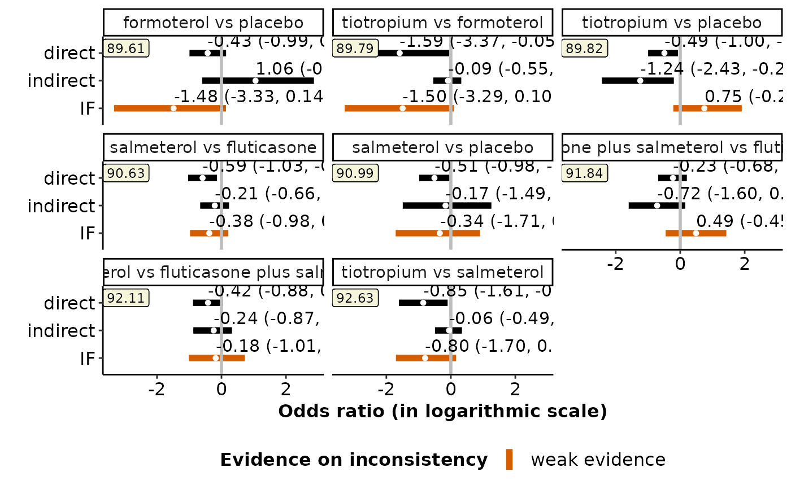
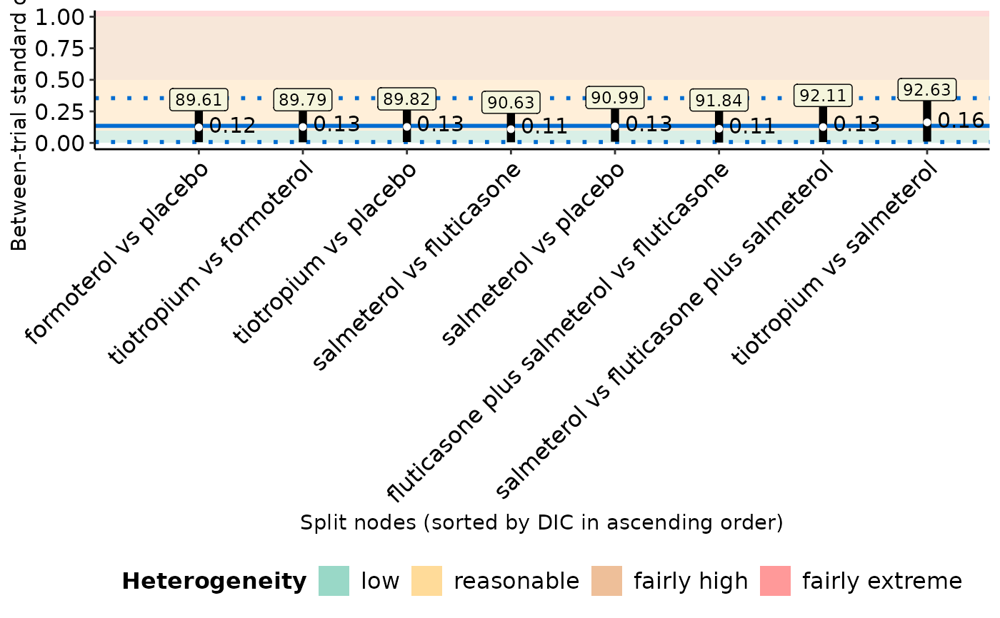

End-user-ready results for the node-splitting approach
Source:R/nodesplit.plot_function.R
nodesplit_plot.Rdnodesplit_plot hosts a toolkit of functions that
facilitates the comparison of the consistency model
(via run_model) with the node-splitting approach
(via run_nodesplit) regarding the posterior summaries of the
direct and indirect effects and inconsistency factor of the split
nodes, the between-trial standard deviation and model assessment
parameters (Spiegelhalter et al., 2002) after each split node in the
network.
Arguments
- full
- node
An object of S3 class
run_nodesplit. See 'Value' inrun_nodesplit.- drug_names
A vector of labels with the name of the interventions in the order they appear in the argument
dataofrun_model. Ifdrug_namesis not defined, the order of the interventions as they appear indatais used, instead.- save_xls
Logical to indicate whether to export the tabulated results to an 'xlsx' file (via the
write_xlsxfunction of the R-package writexl) at the working directory of the user. The default isFALSE(do not export).
Value
nodesplit_plot returns the following list of elements:
- table_effect_size
A data-frame with the posterior median, posterior standard deviation and 95% credible interval of the direct and indirect effect and the inconsistency factor of each split node.
- table_model_assessment
A data-frame with the model assessment parameters (DIC, posterior mean of total residual deviance, and number of effective parameters), the posterior median, posterior standard deviation and 95% credible interval of tau under the consistency model and after each split node. See 'Details'.
- intervalplot_inconsistency_factor
A panel of interval plots on the direct and indirect effect of the split nodes and the corresponding inconsistency factor. See 'Details'.
- intervalplot_tau
An interval plot on tau after each split node. See 'Details'.
Details
intervalplot_inconsistency_factor includes as many interval
plots as the number of split nodes in the network. Each interval plot
illustrates the posterior median and 95% credible interval of the direct and
indirect effect of the split nodes and the corresponding inconsistency
factor.
The line that corresponds to the inconsistency factor is highlighted with
green, when it does not cross the vertical line of no difference (between
the direct and indirect effect), and red otherwise. If there are more than
30 split nodes, the function presents the interval plots on split nodes
with conclusive inconsistency factor (green intervals) or those with
an opposite sign in the direct and indirect effects.
intervalplot_tau is an interval plot on the median and 95% credible
interval of tau after each split node. The lines that correspond to
the split nodes are sorted in ascending order of the deviance information
criterion (DIC) which appears at the top of each line.
The estimated median and 95% credible intervals of tau under the
consistency model appear in the interval plot as a solid and two dotted
parallel blue lines, respectively. The different levels of heterogeneity
appear as green, yellow, orange, and red rectangulars to indicate a low,
reasonable, fairly high, and fairly extreme heterogeneity, respectively,
following the classification of Spiegelhalter et al. (2004).
When a fixed-effect model has been performed, nodesplit_plot does
not return the intervalplot_tau.
table_model_assessment also includes the column
DIC-based better fit that indicates the preferred model in terms of
parsimony for each split node. Therefore, the DIC of the model after each
split node is compared with the DIC of the consistency model
(Dias et al., 2010). If the difference in DIC exceeds 5, the consistency
model is preferred; if the difference in DIC is less than -5, the model
after the split node is preferred; otherwise, there is little to choose
between the compared models.
For a binary outcome, when measure is "RR" (relative risk) or "RD"
(risk difference) in run_model, nodesplit_plot
currently presents the results in the odds ratio scale. This is because,
the odds ratio is used as the 'best-case' effect measure in
run_model. Then, relative risk, and risk difference are
obtained as a function of the odds ratio and the selected baseline risk
(See 'Details' in run_model).
The split nodes have been automatically selected via the
mtc.nodesplit.comparisons
function of the R-package
gemtc.
See 'Details' in run_nodesplit.
Furthermore, nodesplit_plot exports both data-frames to separate
'xlsx' files (via the write_xlsx function
of the R-package
writexl) to the working
directory of the user.
nodesplit_plot can be used only for a network of interventions and
when there is at least one split node. Otherwise, the execution of the
function will be stopped and an error message will be printed on the R
console.
References
Dias S, Welton NJ, Caldwell DM, Ades AE. Checking consistency in mixed treatment comparison meta-analysis. Stat Med 2010;29(7-8):932--44. doi: 10.1002/sim.3767
Spiegelhalter DJ, Abrams KR, Myles JP. Bayesian approaches to clinical trials and health-care evaluation. John Wiley and Sons, Chichester, 2004.
Spiegelhalter DJ, Best NG, Carlin BP, van der Linde A. Bayesian measures of model complexity and fit. J R Stat Soc B 2002;64(4):583--616. doi: 10.1111/1467-9868.00353
Examples
data("nma.baker2009")
# Read results from 'run_model' (using the default arguments)
res <- readRDS(system.file('extdata/res_baker.rds', package = 'rnmamod'))
# Read results from 'run_nodesplit' (using the default arguments)
node <- readRDS(system.file('extdata/node_baker.rds', package = 'rnmamod'))
# The names of the interventions in the order they appear in the dataset
interv_names <- c("placebo", "budesonide", "budesonide plus formoterol",
"fluticasone", "fluticasone plus salmeterol",
"formoterol", "salmeterol", "tiotropium")
# Plot the results from both models
nodesplit_plot(full = res,
node = node,
drug_names = interv_names)
#> $table_effect_size
#>
#>
#> Table: Estimates for the split nodes
#>
#> |Node | Median direct | SD direct | 95% CrI direct | Median indirect | SD indirect | 95% CrI indirect | Median IF | SD IF | 95% CrI IF |
#> |:------------------------------------------|:-------------:|:---------:|:---------------:|:---------------:|:-----------:|:----------------:|:---------:|:-----:|:-------------:|
#> |formoterol vs placebo | -0.43 | 0.29 | (-0.99, 0.14) | 1.06 | 0.87 | (-0.6, 2.87) | -1.48 | 0.87 | (-3.33, 0.14) |
#> |tiotropium vs formoterol | -1.59 | 0.85 | (-3.37, -0.05)* | -0.09 | 0.22 | (-0.55, 0.32) | -1.50 | 0.87 | (-3.29, 0.1) |
#> |tiotropium vs placebo | -0.49 | 0.24 | (-1, -0.07)* | -1.24 | 0.57 | (-2.43, -0.2)* | 0.75 | 0.54 | (-0.22, 1.91) |
#> |salmeterol vs fluticasone | -0.59 | 0.23 | (-1.03, -0.14)* | -0.21 | 0.22 | (-0.66, 0.23) | -0.38 | 0.30 | (-0.98, 0.21) |
#> |salmeterol vs placebo | -0.51 | 0.25 | (-0.98, -0.03)* | -0.17 | 0.68 | (-1.49, 1.26) | -0.34 | 0.64 | (-1.71, 0.91) |
#> |fluticasone plus salmeterol vs fluticasone | -0.23 | 0.23 | (-0.68, 0.21) | -0.72 | 0.44 | (-1.6, 0.15) | 0.49 | 0.48 | (-0.45, 1.43) |
#> |salmeterol vs fluticasone plus salmeterol | -0.42 | 0.24 | (-0.88, 0.05) | -0.24 | 0.30 | (-0.87, 0.33) | -0.18 | 0.44 | (-1.01, 0.72) |
#> |tiotropium vs salmeterol | -0.85 | 0.38 | (-1.61, -0.1)* | -0.06 | 0.21 | (-0.49, 0.34) | -0.80 | 0.47 | (-1.7, 0.16) |
#>
#> $table_model_assessment
#>
#>
#> Table: Model assessment parameters (50 unconstrained data points)
#>
#> |Approach | Residual deviance | DIC | pD |DIC-based better fit | Median tau | SD tau | 95% CrI tau |
#> |:------------------------------------------|:-----------------:|:-----:|:-----:|:--------------------|:----------:|:------:|:------------:|
#> |NMA | 54.19 | 89.16 | 34.97 |- | 0.14 | 0.09 | (0.01, 0.35) |
#> |formoterol vs placebo | 89.61 | 53.35 | 36.26 |After split node | 0.12 | 0.09 | (0.01, 0.34) |
#> |tiotropium vs formoterol | 89.79 | 53.28 | 36.51 |After split node | 0.13 | 0.09 | (0.01, 0.34) |
#> |tiotropium vs placebo | 89.82 | 53.41 | 36.41 |After split node | 0.13 | 0.09 | (0.01, 0.35) |
#> |salmeterol vs fluticasone | 90.63 | 53.17 | 37.46 |After split node | 0.11 | 0.09 | (0.01, 0.32) |
#> |salmeterol vs placebo | 90.99 | 54.28 | 36.71 |After split node | 0.13 | 0.09 | (0.01, 0.36) |
#> |fluticasone plus salmeterol vs fluticasone | 91.84 | 53.91 | 37.93 |After split node | 0.11 | 0.09 | (0, 0.34) |
#> |salmeterol vs fluticasone plus salmeterol | 92.11 | 53.64 | 38.47 |After split node | 0.13 | 0.10 | (0.01, 0.38) |
#> |tiotropium vs salmeterol | 92.63 | 54.13 | 38.50 |After split node | 0.16 | 0.11 | (0.01, 0.42) |
#>
#> $intervalplot_inconsistency_factor

#>
#> $intervalplot_tau

#>